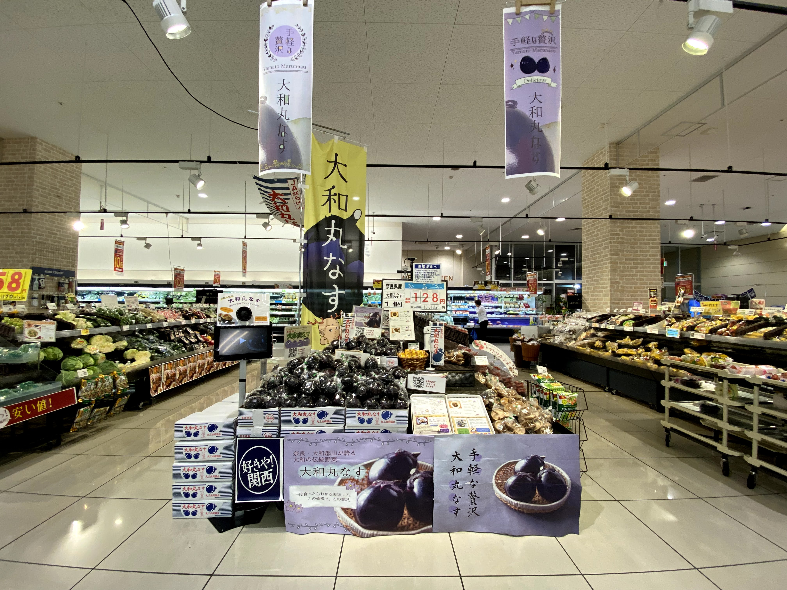
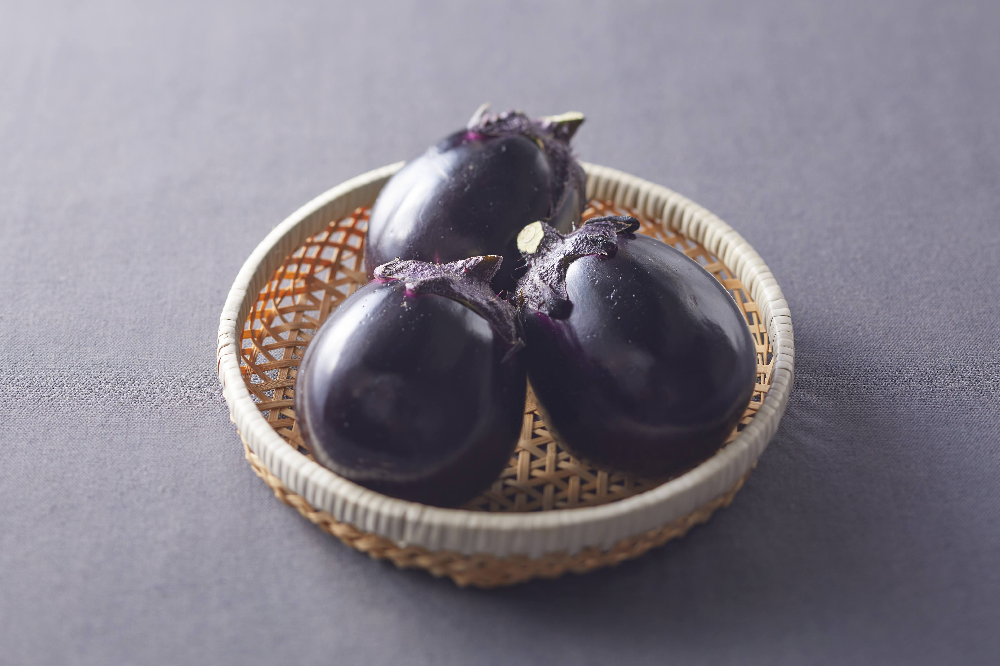
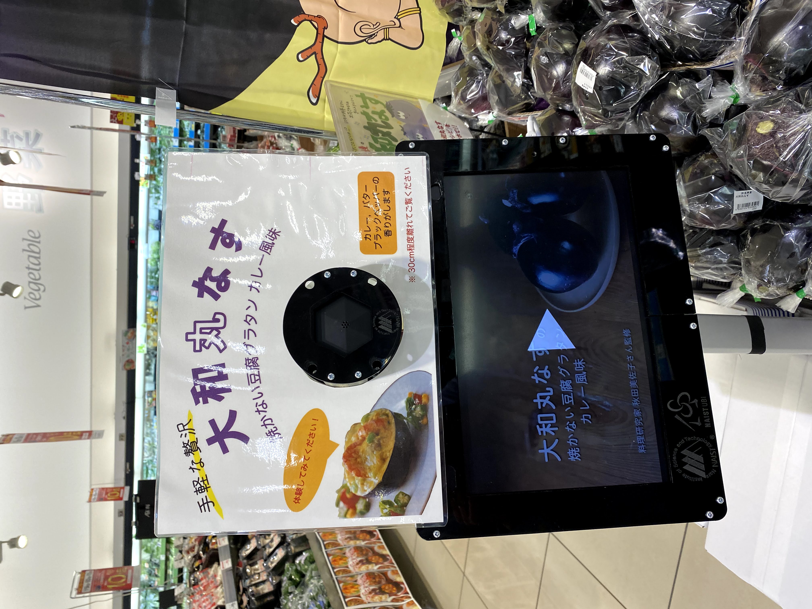
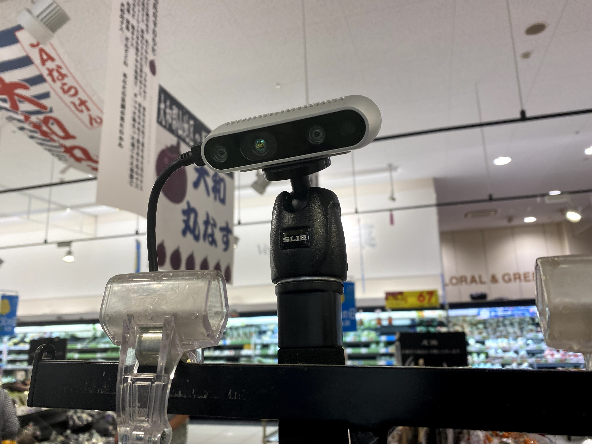
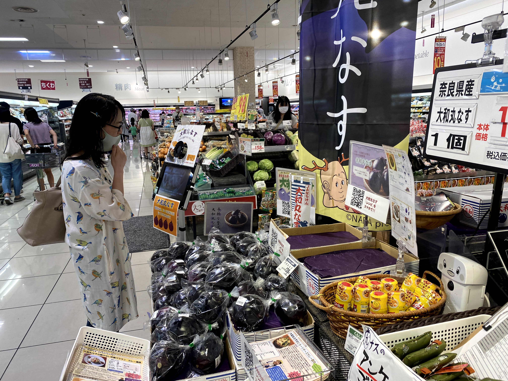

Aroma Nudges
Persuasive Technology / Behavior Change / Olfactory Interface
Due to the pandemic of COVID-19, product sampling at supermarkets has been restricted, and the disposal of unsold vegetables and other perishable foods has become a problem. To explore alternatives to product sampling, this study focuses on the "aroma" generated during product sampling and explores the effect of aroma nudges on purchasing behavior. Specifically, we focused on the scenario of promoting the purchase of Yamato-maru eggplant, a traditional vegetable of Nara Prefecture in Japan. We conducted an experiment in a supermarket for two months, from June to July of 2021, the season of the Yamato-maru eggplant. We compared the number of visits to the sales booth, the time spent in the booth, and the sales volume under four conditions: (1) no presentation, (2) presentation of paper media, (3) presentation of the paper and video media, and (4) presentation of a paper, video, and olfactory media. The experiment results suggest that the inclusion of aroma nudges has a positive potential to attract consumer interest and positively influence their purchasing decisions.





- Examination of Effective Deliciousness Transmission Method That Leads to Purchasing Behavior of Yamato (Another Name for Nara, the Ancient Capital of Japan)’s Traditional Vegetable "Yamato-maru Eggplant" That Makes Full Use of Nudge Theory and Information
- Aroma Nudges: Exploring the Effects on Shopping Behavior in a Supermarket
- 香りナッジが実店舗の購買行動に及ぼす影響の調査 優秀講演賞
- 大和の伝統野菜「大和丸なす」の購買行動に繋げる効果的なおいしさの伝達方法の検討
- 嗅覚に作用するナッジを用いた購買行動変容システムの検討 学生優秀発表賞